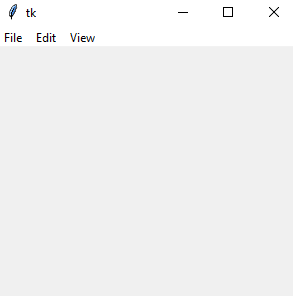

GUI
Создание меню
Для создания иерархического меню в tkinter и Python применяется виджет Menu. Меню может содержать много элементов, причем эти элементы сами могут представлять меню и содержать другие элементы. В зависимости от того, какой тип элементов мы хотим добавить в меню, будет отличаться метод, используемый для их добавления. В частности, нам доступны следующие методы:
add_command(options): добавляет элемент меню через параметр options
add_cascade(options): добавляет элемент меню, который в свою очередь может представлять подменю
add_separator(): добавляет линию-разграничитель
add_radiobutton(options): добавляет в меню переключатель
add_checkbutton(options): добавляет в меню флажок
Простейшее меню:
from tkinter import *
root = Tk()
root.geometry("300x250")
main_menu = Menu()
main_menu.add_cascade(label="File")
main_menu.add_cascade(label="Edit")
main_menu.add_cascade(label="View")
root.config(menu=main_menu)
root.mainloop()

Для добавления пунктов меню у объекта Menu вызывается метод add_cascade(). В этот метод передаются параметры пункта меню, в данном случае они представлены текстовой меткой, устанавливаемой через параметр label. Но просто создать меню - еще недостаточно. Его надо установить для текущего окна с помощью параметра menu в методе config(). В итоге графическое окно будет иметь меню: